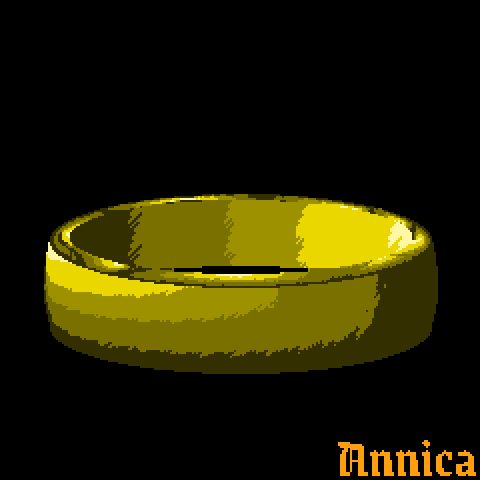
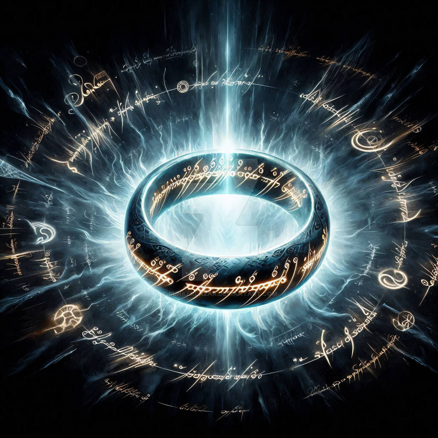
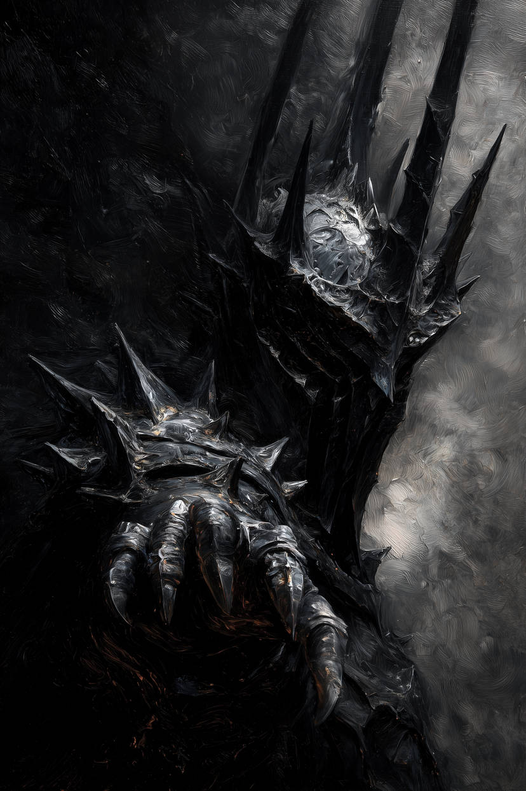
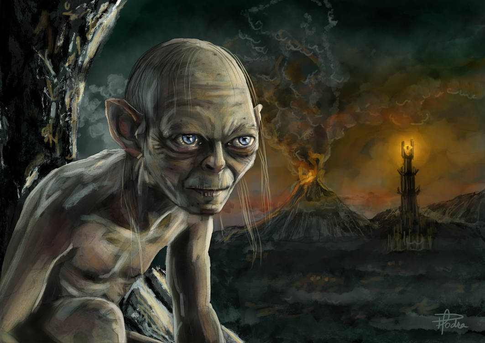
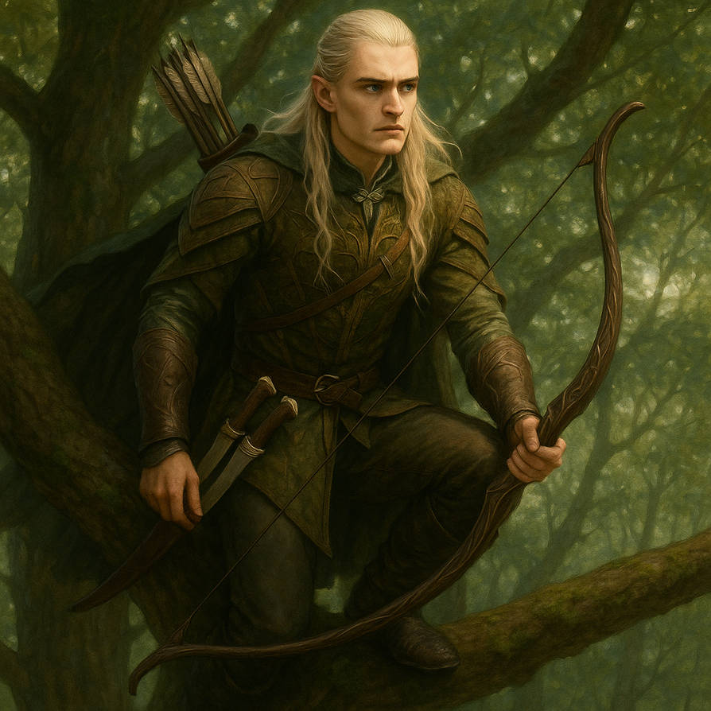
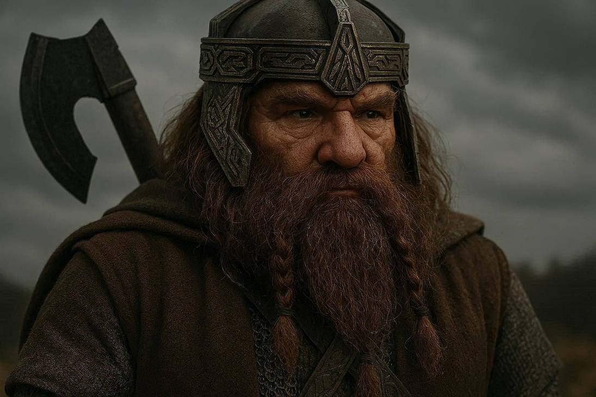
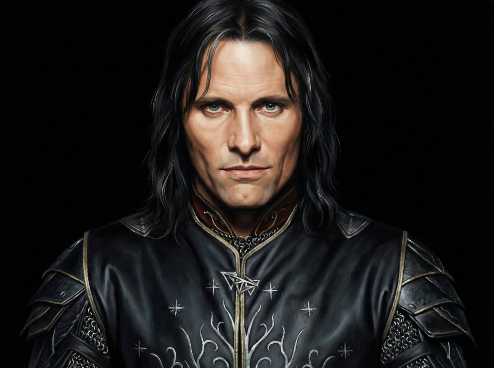
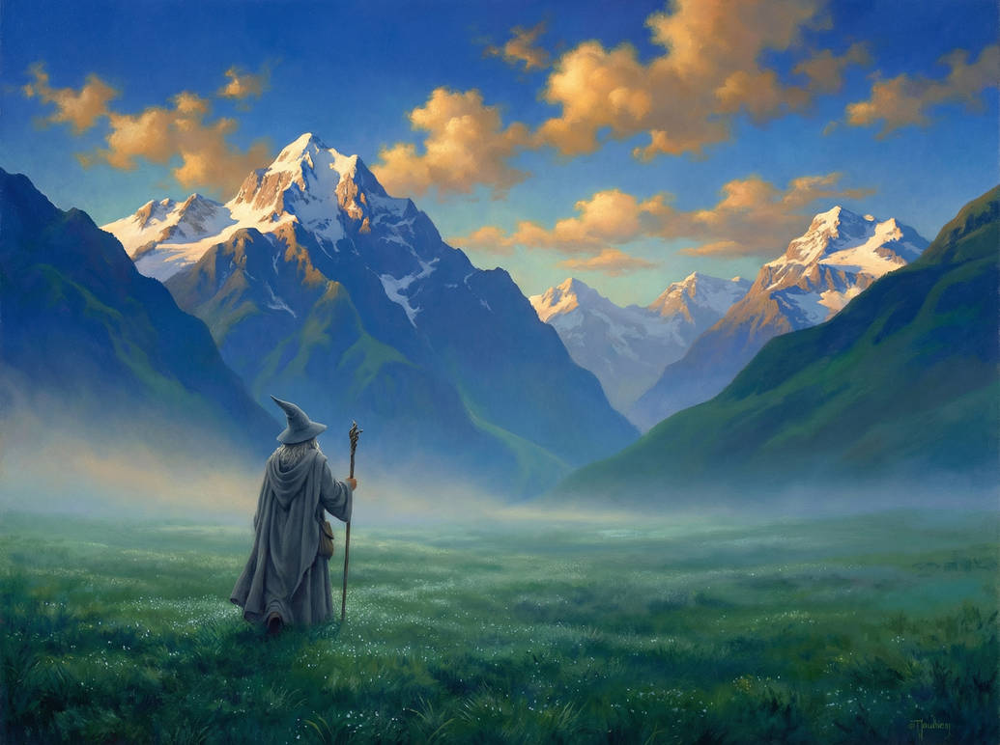

O Um Anel (de O Senhor dos Anéis) é o objeto central da história criada por J. R. R. Tolkien. Ele foi forjado pelo Senhor do Escuro Sauron com o objetivo de controlar todos os outros Anéis de Poder e dominar a Terra-média. O anel possui uma grande força mágica: ele concede poder a quem o usa, mas também corrompe lentamente a mente e o coração da pessoa. Além disso, o Um Anel torna seu portador invisível e tem vontade própria, sempre tentando voltar para Sauron. No geral, ele representa a tentação do poder absoluto e como esse poder pode destruir até mesmo pessoas boas.

Sauron é o principal antagonista de O Senhor dos Anéis, obra de J. R. R. Tolkien. Ele é um ser poderoso e antigo, originalmente um espírito que acabou sendo corrompido pelo desejo de dominação. Sauron foi o criador do Um Anel, no qual colocou grande parte de seu próprio poder. Com ele, pretendia controlar os outros Anéis de Poder e governar toda a Terra-média. Após ser derrotado no passado, sua forma física foi destruída, mas seu espírito continuou existindo, mantendo sua influência e buscando recuperar o anel para voltar ao poder total. Mesmo sem um corpo, Sauron é representado como um olho flamejante que tudo vê, sempre vigilante e ameaçador. Ele simboliza o mal absoluto, a tirania e a obsessão pelo controle, sendo uma força constante de medo ao longo da história.

Gollum, também conhecido como Sméagol, é um dos personagens mais complexos de O Senhor dos Anéis, obra de J. R. R. Tolkien. Originalmente, Sméagol era um hobbit comum, mas sua vida mudou completamente quando encontrou o Um Anel. Consumido pela obsessão, ele matou seu amigo para ficar com o objeto e, ao longo dos anos, foi sendo corrompido pelo poder do anel. Seu corpo e sua mente se transformaram, dando origem à criatura conhecida como Gollum. Ele vive em conflito interno: uma parte ainda é o antigo Sméagol, enquanto a outra é Gollum, dominada pela ganância e pelo desejo de recuperar seu “precioso” — como ele chama o anel. Essa dualidade faz dele um personagem imprevisível, às vezes ajudando, outras traindo. Gollum representa como o poder pode destruir a identidade de alguém, mostrando até onde a obsessão pode levar uma pessoa.



